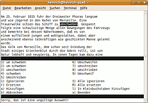

GNU Aspell
Dieser Artikel wurde für die folgenden Ubuntu-Versionen getestet:
Ubuntu 16.04 Xenial Xerus
Zum Verständnis dieses Artikels sind folgende Seiten hilfreich:
 GNU Aspell
GNU Aspell  ist ein umfangreiches Programm zur Rechtschreibprüfung, das von etlichen GNOME- und KDE-Programmen verwendet wird. Die Überprüfung ist in einer Vielzahl von Sprachen möglich (siehe Wörterbücher). Es können mehrere Wörterbücher nebeneinander eingesetzt werden, außerdem lassen sich auch eigene Benutzerwörterbücher mit häufig benutzten Fachbegriffen etc. anlegen. Es können unterschiedliche Dokumente (Texte, Webseiten, E-Mails, HTML/SGML-, TeX- und Nroff-Dateien) überprüft werden. Standardmäßig wird von einem reinen Text ausgegangen, die dafür verwendete Kodierung lässt sich angeben. Die Möglichkeiten von Aspell gehen weit über die eigentliche Rechtschreibprüfung hinaus, so lassen sich z.B. sehr einfach eigene Wörterbücher erstellen und sehr dezidierte Filter-Optionen für verschiedene Dokumenttypen in eigenen Konfigurationsdateien festlegen.
ist ein umfangreiches Programm zur Rechtschreibprüfung, das von etlichen GNOME- und KDE-Programmen verwendet wird. Die Überprüfung ist in einer Vielzahl von Sprachen möglich (siehe Wörterbücher). Es können mehrere Wörterbücher nebeneinander eingesetzt werden, außerdem lassen sich auch eigene Benutzerwörterbücher mit häufig benutzten Fachbegriffen etc. anlegen. Es können unterschiedliche Dokumente (Texte, Webseiten, E-Mails, HTML/SGML-, TeX- und Nroff-Dateien) überprüft werden. Standardmäßig wird von einem reinen Text ausgegangen, die dafür verwendete Kodierung lässt sich angeben. Die Möglichkeiten von Aspell gehen weit über die eigentliche Rechtschreibprüfung hinaus, so lassen sich z.B. sehr einfach eigene Wörterbücher erstellen und sehr dezidierte Filter-Optionen für verschiedene Dokumenttypen in eigenen Konfigurationsdateien festlegen.
Installation¶
Installiert werden muss das Paket
aspell
 mit apturl
mit apturl
Paketliste zum Kopieren:
sudo apt-get install aspell
sudo aptitude install aspell
sowie die gewünschten Wörterbücher.
Benutzung¶
Aspell ist ein Kommandozeilenwerkzeug[2], die allgemeine Syntax lautet
aspell [Option(en)] [Befehl]...
Beispiele¶
aspell check file.txt aspell -b -d de-alt --sug-mode badspeller -c Falsch.txt
Der erste Befehl überprüft die angegebenen Textdatei mit den Standardeinstellungen in der derzeit verwendeten Systemsprache, dies erfolgt interaktiv im Terminal. Die Korrektur wird direkt in der Dateien gespeichert.
Der zweite Befehl überprüft die Datei Falsch.txt nach alter deutscher Rechtschreibung (-d de-alt), legt eine Sicherungsdatei an (-b) und gibt eine Vielzahl von Vorschlägen aus (--sug-mode badspeller).
Einzelne Wörter lassen sich nach dem Prinzip
echo [ZU ÜBERPRÜFENDE WÖRTER] | aspell pipe
überprüfen, in der Ausgabe werden dann entweder * (als korrekt erkannt), + korrekt, mit folgendem Wortstamm/Grundwort oder & mit folgendem nicht erkanntem Wort sowie gefundenen Alternativen ausgegeben,
echo Der alte Legateniker | aspell pipe
gibt entsprechend Folgendes aus:
* + alt & Legateniker 3 9: Legastheniker, Legasthenikern, Legasthenikers

Interaktiver Modus¶
Wörter, die nicht im Wörterbuch enthalten sind, werden im Editorfenster hervorgehoben im Textzusammenhang angezeigt. Außerdem werden Vorschläge aus dem Wörterbuch mit vorangestellten Ziffern aufgelistet, wenn welche gefunden wurden. Das Wort kann so akzeptiert (und in das eigene Wörterbuch aufgenommen werden), durch ein vorgeschlagenes, oder durch eine eigene Eingabe (auch mehrere Wörter) ersetzt werden. Das eigene Wörterbuch wird im Homeverzeichnis des Benutzers unter Verwendung der Spracheinstellung erstellt, also beispielsweise als ~/.aspell_de_DE. Außerdem wird eine Liste mit den vorgenommenen Ersetzungen angelegt, auf die ggf. zurückgegriffen wird , sie wird unter dem Namen ~/.aspell.de.prepl abgelegt und enthält die gefundenen Wörter sowie die Ersetzungen. Diese Dateien lassen sich natürlich auch bearbeiten, falls z.B. versehentliche falsche Einträge vorgenommen wurden.
| Interaktiver Modus von Aspell | |
| Taste(n) | Funktion |
| 0 , 1 , 2 ... | Ersetzung mit einem der vorgeschlagenen Wörter |
| I | Das Wort ignorieren |
| ⇧ + I | Jedes Vorkommen des Wortes ignorieren |
| R | Das Wort ersetzen |
| ⇧ + R | Jedes Vorkommen des Wortes ersetzen |
| A | Das Wort akzeptieren und in das Benutzerwörterbuch aufnehmen |
| L | Das Wort akzeptieren und eine kleingeschriebene Version aufnehmen |
| B | Sofort abbrechen (Bestätigung erforderlich), Datei bleibt unverändert |
| X | Prüfung abbrechen, bisherige Änderungen werden übernommen |
Befehle und Optionen¶
Aspell-Befehle
| Aspell-Befehle | |
| Befehl | Funktion |
usage, -? | Einen kurzen Hilfetext anzeigen, eine kurze Übersicht der wichtigsten Befehle und Optionen. |
help | Einen ausführlichen Hilfetext anzeigen, der eine komplette Übersicht über alle Befehle, Optionen, Filter und verfügbaren Wörterbücher gibt. |
version, -v | Versionsangabe |
check [Datei], -c [Datei] | Eine bestimmte Datei überprüfen |
list | Liste von nicht erkannten Wörtern von der Standardeingabe ausgeben |
[dump] config | Gibt die aktuelle Konfiguration auf der Standardausgabe aus |
config <key> | Gibt den aktuellen Wert einer Option aus |
soundslike | Gibt den Wortklang zu jedem eingegebenen Wort aus |
clean [strict] | Wortliste aufräumen, so dass jede Zeile ein gültiges Wort ist |
conv <from> <to> [<norm-form>] | Konvertiert von einer Codierung in eine andere |
[dump] dicts|filters|modes | Listet verfügbare Wörterbücher / Filter / Filtermodi auf |
dump|create|merge master|personal|repl [wordlist] | Haupt- (master), persönliche (personal) oder Ersetzungs- (replacement)-Wortliste ausgeben (dump), erzeugen (create) oder zusammenführen (merge). |
Aspell lässt sich über in Vielzahl von Optionen steuern, hier nur ein kleine Auswahl der gebräuchlicheren Möglichkeiten:
| Aspell-Optionen | |
| Option | Funktion |
--master=[Name], -d [Name] | Name des zu benutzenden Wörterbuchs; wenn verwendet, muss ein Name angegeben werden. |
--lang=[Wert], -l [Wert] | Zu verwendende Sprache, im Format der LANG-Variable. Besteht aus zwei Buchstaben nach ISO 639 (z.b. de) sowie optional zwei weiteren angehängten zu Spezifizierung nach ISO 3166 (_DE/-de). Standard ist die eingestellte systemweite Sprache. |
--sug-mode=[Wert] | Vorschlagmodus, mögliche Werte sind fast, normal, slow, badspeller, mit aufsteigenden Vorschlagsmöglichkeiten/Treffersicherheit, bei absteigender Geschwindigkeit |
--mode=[Wert], -e, -H, -t, -n | Festlegung des Filtermodus, möglich sind none, url, email, html, tex, nroff. Kurzformen sind -e email, -H Html/Sgml, -t Tex, -n Nroff. |
--encoding=[Code-Kürzel] | Textenkodierung des zu verarbeitenden Textes; Standard ist die systemweite Einstellung (unter Ubuntu im Normalfall UTF-8) |
--run-together, --dont-run-together, -C, -B | Behandelt gekoppelte Komposita als gültig/ungültig |
--run-together-limit=[Zahlwert] | Größtmögliche Anzahl an gekoppelten Wörtern |
--run-together-min=[Zahlwert] | Minimale Länge der einzelnen Wörter |
--conf=[Dateiname] | Hauptkonfigurations-Datei, hat Vorrang vor den Standard-Einstellungen. |
--per-conf=[Dateiname] | Persönliche Konfiguration-Datei, hat Vorrang vor der Hauptkonfiguration |
--keyboard=[Tastatur-Layout] | Tastaturdefinition für die Tippfehleranalyse; verwendet das angegebene Tastatur-Layout, um Fehler zu analysieren, die durch das versehentliche Betätigen benachbarter Tasten entstehen. |
--backup, --dont-backup, -b, -x | Aspell kann für bearbeitete Dateien eine Kopie erstellen, die mit der Endung .bak das Original sichert. Verwendung ist nur mit check|-c möglich, wird nur ausgeführt, wenn tatsächlich Änderungen erfolgt sind |
Die Orte der einzelnen Dateien lassen sich über weitere Optionen festlegen. Viele weitere Optionen beziehen sich auch auf die Verwendung von Aspell als Ersatz für Ispell , das nicht mehr weiterentwickelt wird, sie sind hier nicht aufgeführt.
Nutzung von Konfigurations-Dateien¶
Um nicht jedes Mal die Optionen wieder auf der Kommandoziele eingeben zu müssen, können Konfigurations-Dateien verwendet werden. Die Standard-Konfiguration ist in /etc/aspell.conf gespeichert, die Benutzer-Konfiguration in ~/.aspell.conf (andere Namen können über die --conf/--per-conf-Optionen festgelegt werden). Die Benutzer-Konfiguration hat dabei Vorrang; auf der Kommandozeile oder in der PATH-Variable angegebene Werte haben Vorrang vor den Konfigurations-Werten.
Jede Zeile hat das Format
Option [Wert]
Die Optionen sind die Wörterbuch-Optionen ohne die führenden "--"-Zeichen, der Wert wird ohne "=" angefügt, Kommentare können nach einem # eingefügt werden, beispielsweise:
lang de_CH #Schweizer Variante!
Weiteres in der Manpage des Programms, ausführliche Hinweise auch über den Befehl aspell help. Den ganzen Umfang der Möglichkeiten findet man im Handbuch
Erzeugung von Wörterbüchern¶
Manchmal werden Wörterbücher benötigt, um Programmen die Rechtschreibprüfung in einer gewünschten Sprache zu ermöglichen. Ein Beispiel ist die Rechtschreibprüfung der Eclipse-IDE. Ein deutsches Wörterbuch im Textformat (UTF-8) mit einem Wort pro Zeile kann mit folgendem Befehl im Terminal [2] erzeugt werden:
aspell dump master de_DE > de_DE.dict
Mittlerweile komprimiert aspell bei der Ausgabe die Wörter. Mit dieser Kompression können andere Programme wie z.B. die Eclipse-IDE nichts anfangen, da sie ein "richtiges" Wort in jeder Zeile erwarten! Mit folgender Befehlsfolge können die Wörter expandiert werden, wobei jedes expandierte Wort in eine separate Zeile geschrieben wird:
aspell -l de_DE dump master | aspell -l de expand | tr ' ' '\n' > de_DE.dict
Dieser Befehl muss für andere Sprachen (hier: de_DE, neue deutsche Rechtschreibung) angepasst werden. Der Name der Ausgabedatei (hier: de_DE.dict) kann frei gewählt werden.
Aspell lässt sich auch dazu verwenden, eine Wörterliste aus einer beliebigen Textdatei zu erzeugen:
aspell --local-data-dir=./ --lang=de clean < EINGABE.txt > AUSGABE.txt sort -u AUSGABE.txt >SORTIERTEAUSGABE.txt
Der erste Befehl macht aus dem Text ein Liste mit einem Wort pro Zeile (Wörter mit "seltsame" Zeichenkombinationen, also Zahlen in Wörtern, Satzzeichen etc. werden ignoriert). Mit dem zweiten Befehl wird nach System-Spracheinstellung alphabetisch sortiert, mehrfach vorhandenen Wörter dabei auf ein Vorkommen reduziert.
Die Benutzerwörterbücher sind in ~/.config/enchant/ als plain text gespeichert.
Alte deutsche Rechtschreibung¶
Für Aspell kann auch die alte deutsche Rechtschreibung als Sprache verwendet werden, über das Paket aspell-de-alt, sinnvoll, wenn man z.B. nach alter Version erstellte Texte einscannt und das OCR-Ergebnis überprüfen möchte. Es scheinen allerdings nicht alle Anwendungen mit parallel installierten Versionen umgehen zu können. Kate z.B. bietet bei der Auswahl diese Alternative gar nicht an. gedit hingegen zeigt "Deutsch (old)" an und verwendet das Wörterbuch dann auch.
 Übersichtsartikel
Übersichtsartikel- Erstellt mit Inyoka
-
 2004 – 2017 ubuntuusers.de • Einige Rechte vorbehalten
2004 – 2017 ubuntuusers.de • Einige Rechte vorbehalten
Lizenz • Kontakt • Datenschutz • Impressum • Serverstatus -
Serverhousing gespendet von